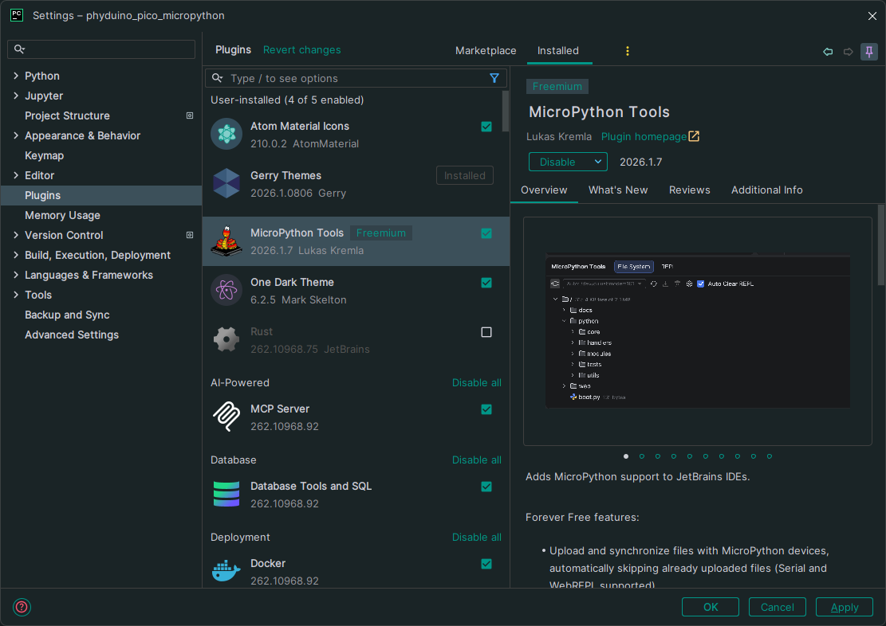
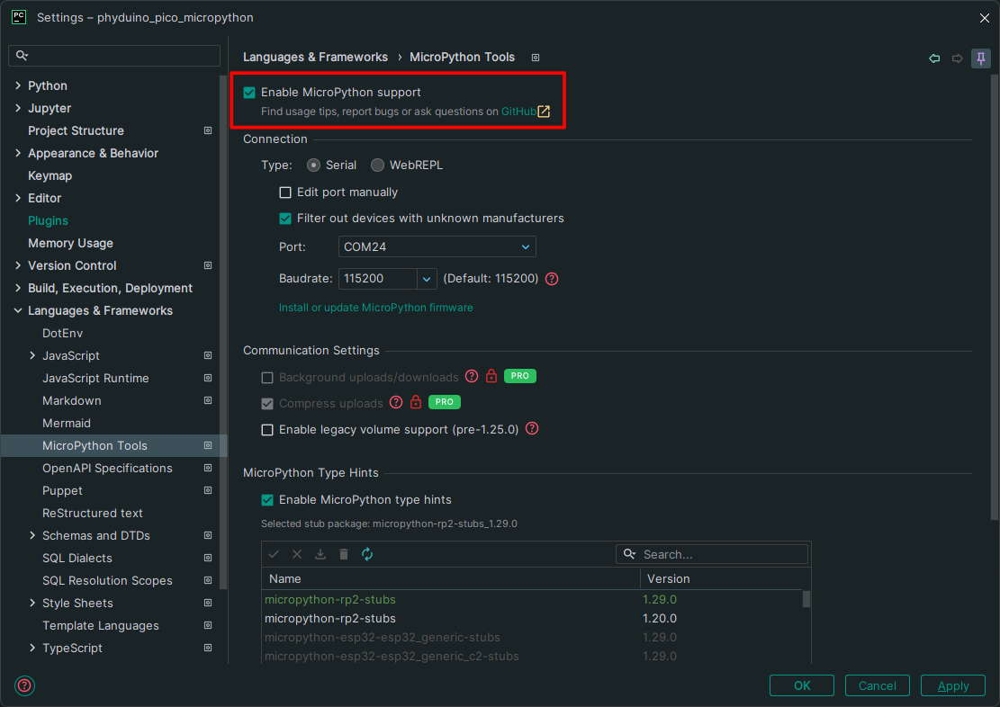
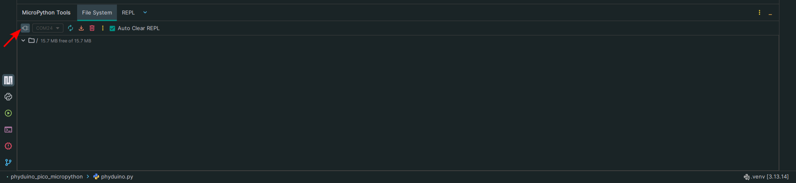
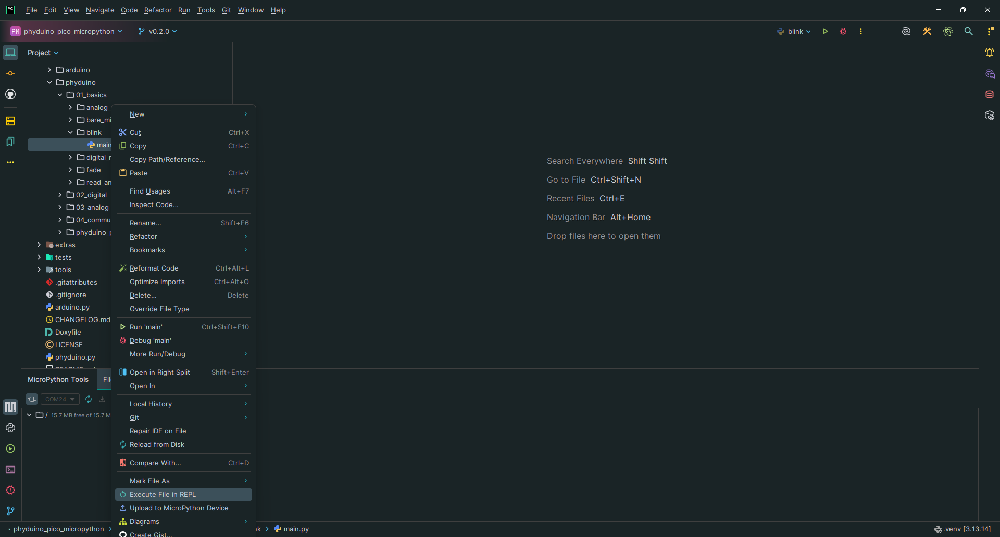
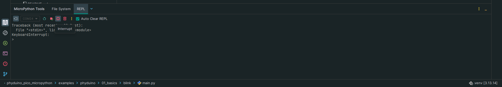
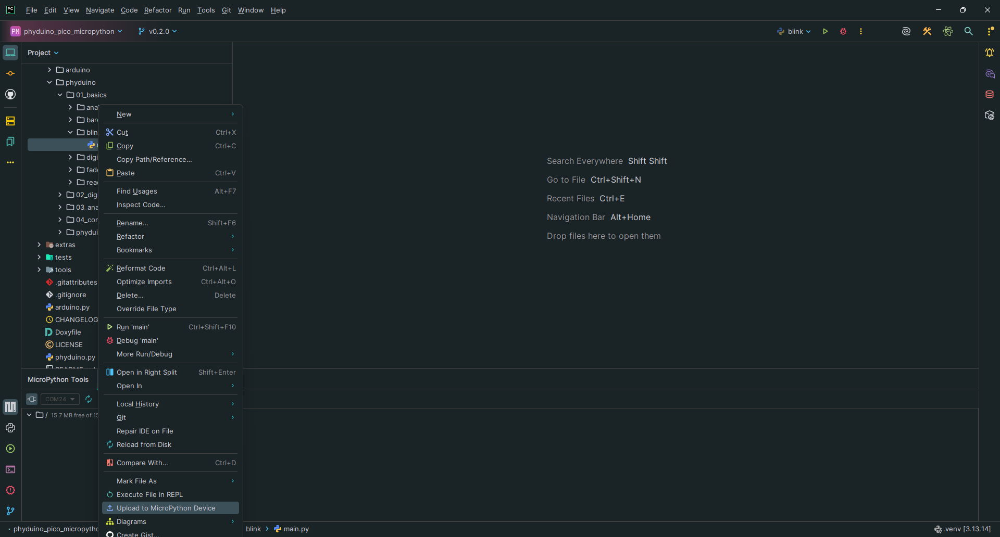

PyCharm is a Python editor. With the MicroPython Tools plugin it connects to the Phyduino Pico over USB, runs your script on the board and shows what it prints. Before you start, load the firmware onto the board (Setting up the Phyduino Pico) and install Python 3.10 or later.
1. Install PyCharm
- Download PyCharm from the JetBrains download page and install it.
- The free version is all you need. The plugin needs PyCharm 2024.3 or newer.
2. Install the MicroPython Tools plugin
- Open the settings: File → Settings (on macOS, PyCharm → Settings).
- Go to Plugins → Marketplace, search for MicroPython Tools and click Install.
- Restart PyCharm if it asks you to.


3. Make a project for the board
- Create a new project, or open the folder that holds your scripts.
- Open the settings again and go to Languages & Frameworks → MicroPython Tools.
- Tick Enable MicroPython support.
-
Under Connection, set Type to Serial. Set Port
to Auto-Detect Port, or pick the board's port from the list (on Windows a
COMport). -
Under MicroPython Type Hints, tick Enable MicroPython type hints, then install and
select micropython-rp2-stubs version 1.29.0, which matches the firmware.
Type hints let PyCharm complete MicroPython names such as
machine.Pinas you type. Installing them needs an internet connection. - Click Apply.


4. Connect to the board
- Plug the board in with a USB cable.
- Open the MicroPython Tools tool window from its icon on the left-hand tool bar. It has a File System tab and a REPL tab.
-
Click the connect button (the plug icon) at the top left of the tool window. The board's port
is shown next to it.

The MicroPython Tools tool window. The arrow points to the connect button; once connected, the File System tab shows the board's files and free space. -
Only one program can use the board's port at a time. If PyCharm can't connect, close any
mpremote replleft open in a terminal. - Auto-Detect needs exactly one MicroPython board plugged in. With more than one, pick the board's port from the list instead.

Linux: if the board isn't found, your account may need permission to use serial ports. See the Linux note in Setting up the Phyduino Pico.
5. Run a script
-
Create a file called
main.pyin the project and paste in this script, which blinks the on-board green LED:# Blinks the on-board green LED once a second. import time # sleep() for pauses import phyduino as mcu # the Phyduino Pico library, used as mcu.<name> mcu.led.off() # start with the LED off while True: # repeats until stopped: Interrupt in PyCharm, or mpremote soft-reset mcu.led.toggle() # on if it was off, off if it was on time.sleep(0.5) # wait half a second, so one on-off cycle takes a second -
Right-click
main.pyin the project tree and choose Execute File in REPL. The green LED starts blinking.
Execute File in REPL near the bottom of the right-click menu for main.py. Upload to MicroPython Device, just below it, is used in step 6. -
Press Interrupt in the REPL tab to stop it.

The Interrupt button (the square) in the REPL tab's toolbar. The REPL then shows KeyboardInterruptand the script has stopped.


PyCharm's Stop button and disconnecting both leave the script running on the board. Connecting again stops it.
6. Run it every time the board starts
Execute File in REPL runs the script without saving it on the board. To have it run on its own:
-
Right-click
main.pyin the project tree and choose Upload to MicroPython Device, or drag it onto the File System tab of the tool window.
Upload to MicroPython Device in the right-click menu for main.py. Once uploaded,main.pyappears in the File System tab. - Press the reset button (SW2). The board runs
main.pyeach time it starts, even when it isn't connected to a computer. - To stop that, delete
main.pyfrom the File System tab (right-click it).

If something doesn't work
- If the board won't run a file, press Hard reset in the REPL tab, or the reset button (SW2) on the board.
-
If the board has an old
phyduino.pyin its File System tab, delete it. It takes priority over the one built into the firmware.